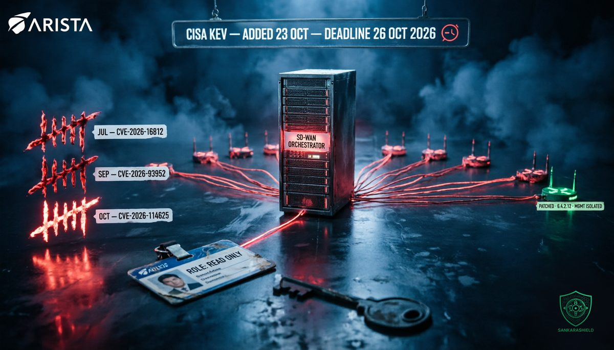

Three exploited flaws in the same SD-WAN orchestrator in three months.

On Thursday 22 October, Arista published Security Advisory 0199 for CVE-2026-114625, a SQL injection in on-premises VeloCloud Orchestrator rated CVSS 9.9. The next day, CISA added it to the Known Exploited Vulnerabilities catalog and gave US federal agencies until today, Monday 26 October, to fix it.
On its own, that would be one more urgent patch in a busy month. What makes it different is the history. This is the third VeloCloud Orchestrator vulnerability exploited in the wild since July. Same product, same component, same customers, three times in one quarter.
That is not bad luck. That is a pattern, and patterns are what attackers build on.
WHAT ACTUALLY HAPPENED
According to Arista's advisory, the flaw "may allow a remote attacker to access privileged internal functionality and impact the VCO host." More precisely, "any authenticated user can gain operator privileges and masquerade as a local 'superuser operator' user."
Three details matter.
THE ROLE — the minimum role required is Enterprise Read Only, which Arista describes as "the lowest built-in tenant role." The attacker needs network access to the VCO web interface and a valid session, nothing more.
THE DISCOVERY — Arista found the issue itself and states that it "is known to be actively exploited." It has published two source IP addresses to block and search for in logs: 74.82.197.86 and 38.54.50.151.
THE EXPOSURE — the advisory says VCO is exposed by default, and that no configuration can prevent the exposure. Only the upgrade closes it.
The fixed releases are 5.2.3.18, 6.1.3.10 and 6.4.2.12 and later. Arista's hosted and dedicated orchestrators were also affected and have already been patched, so the action sits entirely with on-premises customers. End-of-support versions have not been assessed.
One more consequence of the release numbers: an orchestrator that was patched for the July and September flaws is still vulnerable to this one. Being up to date in September does not mean being safe in October.
THREE STRIKES IN ONE QUARTER
JULY — CVE-2026-16812, an OS command injection rated CVSS 10.0. No credentials required, only access to the web interface. Arista confirmed active exploitation, published attacker IP addresses and said the on-prem orchestrator was "exposed by default." CISA added it to KEV.
SEPTEMBER — CVE-2026-93952, an improper input validation flaw rated CVSS 10.0, disclosed on 22 September and again "known to be actively exploited." It required certificate-based authentication between Edge and orchestrator, and an attacker holding the public part of an Edge certificate. Arista's indicators included hidden files such as /usr/local/sbin/.vcnode.js and a fake service, vc-sysmon.service, the signature of an attacker who intends to stay.
OCTOBER — CVE-2026-114625, the SQL injection above. This time the attacker does need a login, but only the weakest one.
Arista inherited VeloCloud when it bought the business from Broadcom, and the on-prem installed base came with it. Many of those orchestrators were deployed years ago, by a network team, as an appliance. They tend to sit outside the normal patch cycle, rarely appear in vulnerability scans, and are upgraded when something breaks rather than when a bulletin lands.
Attackers who come back to the same product three times in three months are not guessing. They know how it is deployed, where it is exposed and how slowly it gets patched.
WHY THE ORCHESTRATOR CHANGES THE MATH
An SD-WAN orchestrator is not just another management console. It is the control plane for the whole WAN. It holds the configuration, routing and security policy of every branch edge, and it pushes changes to all of them at once.
Compromise one firewall and you have a foothold. Compromise the orchestrator and you have every site, without touching a single firewall. Arista's own guidance for the earlier flaws warned that compromise may extend to the managed VeloCloud Edge devices.
That is why a read-only flaw is so serious here. In most organisations, Enterprise Read Only is the account nobody worries about. It is the role handed to the managed service provider, the NOC wall dashboard, the external auditor, the monitoring or ticketing integration. Its password lives in a shared vault, a wiki page or a script that nobody has opened since the migration. It is rarely protected by MFA and almost never reviewed.
When a read-only login is enough to become superuser operator, every one of those accounts is effectively an admin account. Your attack surface is no longer the number of administrators. It is the number of people and systems that can see the dashboard.
WHAT TO DO NOW
PATCH TODAY — upgrade on-premises VCO to 5.2.3.18, 6.1.3.10 or 6.4.2.12 or later; if you run an unsupported train, open a case with Arista TAC now rather than waiting for a fix that may not come.
PRESERVE BEFORE YOU PATCH — if there is any chance you were hit, save VCO web access logs, backend application logs, system logs, database logs and file-system timestamps first, as Arista recommends; an upgrade can erase the evidence you need.
AUDIT EVERY READ-ONLY ACCOUNT — list all Enterprise Read Only users and API tokens, remove the stale ones, rotate the rest and find out who outside your team holds one.
PULL THE WEB INTERFACE OFF THE INTERNET — restrict VCO access to a management network or jump host; all three exploited flaws required reaching the web interface.
HUNT BACKWARDS TO JULY — search logs for 74.82.197.86 and 38.54.50.151, for unusual URL-like paths, encoded characters and references to internal services, for unexpected outbound connections from the VCO host, and for unexplained configuration pushes or database exports.
CHECK FOR PERSISTENCE FROM EARLIER WAVES — look for /usr/local/sbin/.vcnode.js, /usr/local/sbin/vc-sysmond and /etc/systemd/system/vc-sysmon.service from the September campaign; patching a later flaw does not remove a backdoor planted through an earlier one.
VALIDATE THE EDGES — if the orchestrator was compromised, compare the configuration of each branch edge against a known-good baseline, and plan to rebuild the orchestrator from trusted media rather than clean it in place.
WHAT TO READ WITH CARE
The vulnerability description, required role, fixed versions, exposure statement and indicators come from Arista Security Advisory 0199 of 22 October 2026. The KEV addition on 23 October and the 26 October remediation date come from CISA's catalog as reported by The Hacker News and cvefeed.io. Details on the July and September flaws come from Arista's earlier advisories and from The Register's coverage. Arista has not said who is behind the attacks, how many customers were affected, or whether the three campaigns are linked. The 26 October date is a binding deadline only for US federal civilian agencies; for everyone else, it is a strong signal of how urgent the patch is.
THE UNCOMFORTABLE PART
Most organisations treat the orchestrator as plumbing. It was installed once, it works, and nobody wants to touch it. Attackers see the opposite: the single most privileged system on the WAN, exposed by default, patched slowly, and now reachable with the weakest account in the directory.
Three exploited flaws in three months should change how you classify it. Not as a network appliance, but as a crown-jewel system, with the same patch deadlines, access reviews and monitoring you would give your domain controllers.
Your SD-WAN orchestrator is the most privileged system on your WAN. Treat it like one.
So ask it today, while the deadline is still running: how many people outside your team hold a "read-only" login to your network management plane, and would you know if one of them had just become superuser?